Os dados e números desta página descrevem o fabricante Shanghai Fuji Elevator e o seu produto, conforme a documentação técnica da marca. A Elevangola Tech é distribuidora e parceira técnica dos equipamentos Fuji em Angola — não é a entidade certificadora.
A sede reúne investigação, produção, vendas, exposição e formação.
Soldadura robotizada, corte e dobragem de chapa em linha e montagem de máquinas de tracção.
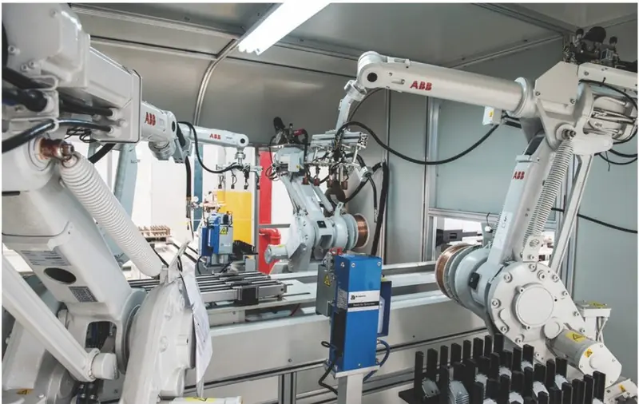
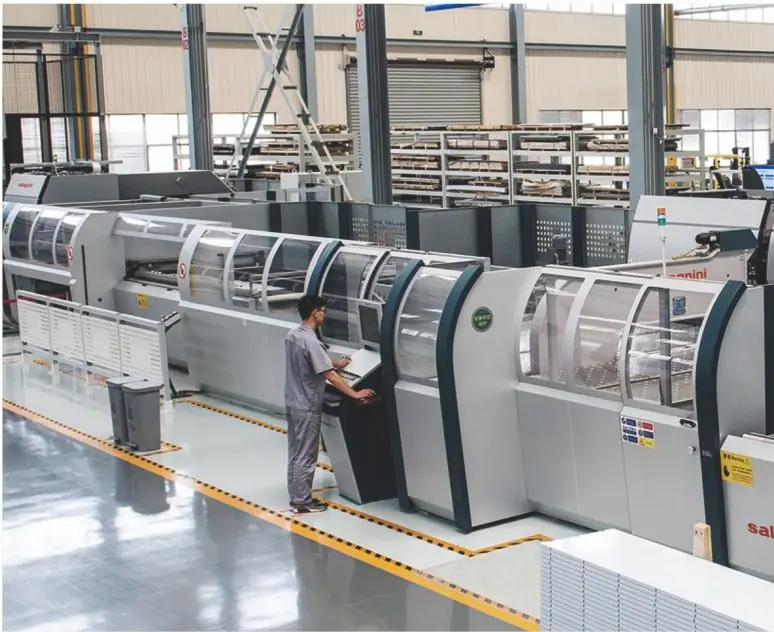
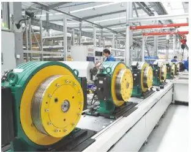
Instalações indicadas pelo fabricante.
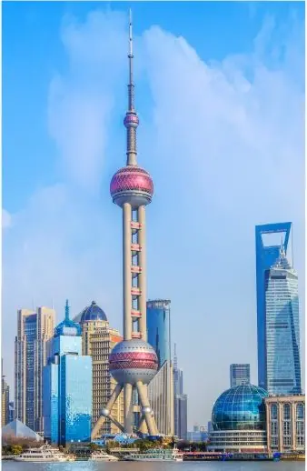
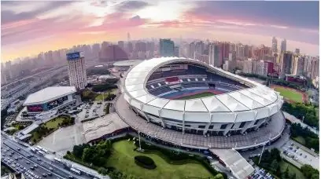
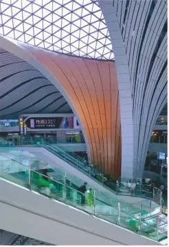
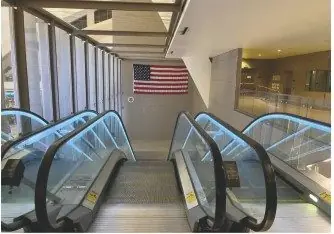
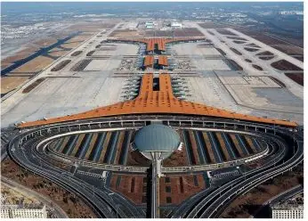
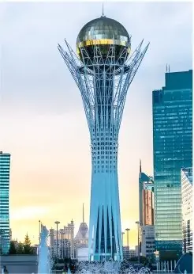
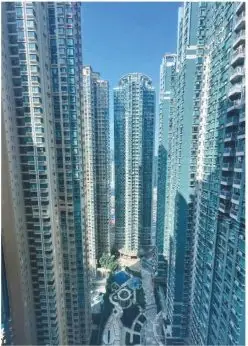
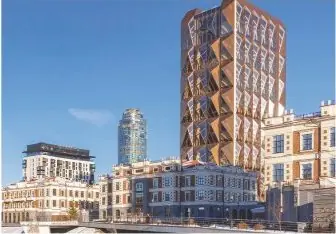
Outros projectos indicados: 700 unidades no projecto hidroeléctrico de Baihetan; 25 unidades em Lisboa; 260 unidades em Komitas Park, Arménia; 120 elevadores e escadas rolantes no aeroporto de Tóquio.
Do levantamento da caixa aos ensaios e à manutenção preventiva, a Elevangola Tech coordena o fornecimento, a importação, a instalação e o apoio técnico do equipamento Fuji.
Confirmamos o modelo Fuji adequado à sua obra e as condições de fornecimento.